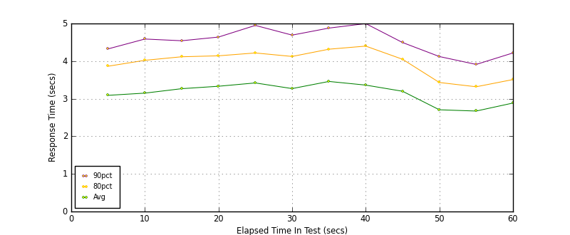
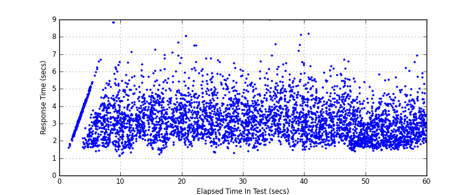
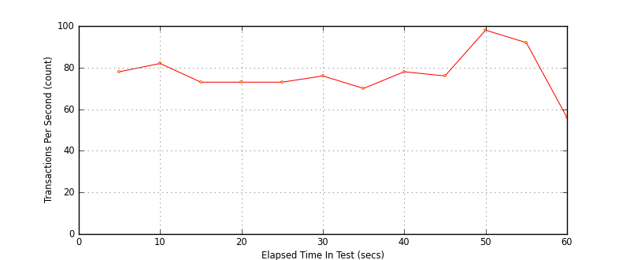

Performance Results Report
Summary
transactions: 4896
errors: 0
run time: 60 secs
rampup: 0 secs
test start: 2017-05-24 19:16:52
test finish: 2017-05-24 19:17:50
time-series interval: 5 secs
workload configuration:
| group name | threads | script name |
|---|
| user_group-21 | 10 | redis_stress.py |
| user_group-20 | 10 | redis_stress.py |
| user_group-23 | 10 | redis_stress.py |
| user_group-22 | 10 | redis_stress.py |
| user_group-25 | 10 | redis_stress.py |
| user_group-24 | 10 | redis_stress.py |
| user_group-2 | 10 | redis_stress.py |
| user_group-3 | 10 | redis_stress.py |
| user_group-1 | 10 | redis_stress.py |
| user_group-6 | 10 | redis_stress.py |
| user_group-7 | 10 | redis_stress.py |
| user_group-4 | 10 | redis_stress.py |
| user_group-5 | 10 | redis_stress.py |
| user_group-8 | 10 | redis_stress.py |
| user_group-9 | 10 | redis_stress.py |
| user_group-10 | 10 | redis_stress.py |
| user_group-11 | 10 | redis_stress.py |
| user_group-12 | 10 | redis_stress.py |
| user_group-13 | 10 | redis_stress.py |
| user_group-14 | 10 | redis_stress.py |
| user_group-15 | 10 | redis_stress.py |
| user_group-16 | 10 | redis_stress.py |
| user_group-17 | 10 | redis_stress.py |
| user_group-18 | 10 | redis_stress.py |
| user_group-19 | 10 | redis_stress.py |
All Transactions
Transaction Response Summary (secs)
| count | min | avg | 80pct | 90pct | 95pct | max | stdev |
|---|
| 4896 | 1.104 | 3.134 | 3.979 | 4.546 | 5.113 | 8.990 | 1.065 |
Interval Details (secs)
| interval | count | rate | min | avg | 80pct | 90pct | 95pct | max | stdev |
|---|
| 1 | 390 | 78.00 | 1.397 | 3.090 | 3.864 | 4.325 | 4.873 | 6.546 | 0.924 |
| 2 | 412 | 82.40 | 1.104 | 3.148 | 4.021 | 4.587 | 5.260 | 8.806 | 1.148 |
| 3 | 367 | 73.40 | 1.197 | 3.267 | 4.115 | 4.542 | 5.081 | 7.259 | 1.026 |
| 4 | 367 | 73.40 | 1.312 | 3.331 | 4.141 | 4.639 | 5.362 | 8.037 | 1.102 |
| 5 | 369 | 73.80 | 1.302 | 3.419 | 4.217 | 4.949 | 5.661 | 7.485 | 1.116 |
| 6 | 381 | 76.20 | 1.275 | 3.269 | 4.124 | 4.691 | 5.239 | 6.458 | 1.028 |
| 7 | 352 | 70.40 | 1.449 | 3.459 | 4.316 | 4.878 | 5.303 | 8.990 | 1.089 |
| 8 | 391 | 78.20 | 1.444 | 3.362 | 4.399 | 4.998 | 5.503 | 8.172 | 1.198 |
| 9 | 382 | 76.40 | 1.566 | 3.198 | 4.049 | 4.494 | 5.082 | 6.659 | 1.004 |
| 10 | 491 | 98.20 | 1.389 | 2.705 | 3.431 | 4.121 | 4.549 | 6.561 | 0.943 |
| 11 | 461 | 92.20 | 1.455 | 2.672 | 3.317 | 3.911 | 4.307 | 5.799 | 0.860 |
| 12 | 283 | 56.60 | 1.530 | 2.885 | 3.509 | 4.218 | 4.614 | 6.905 | 0.936 |
Graphs
Response Time: 5 sec time-series

Response Time: raw data (all points)

Throughput: 5 sec time-series
